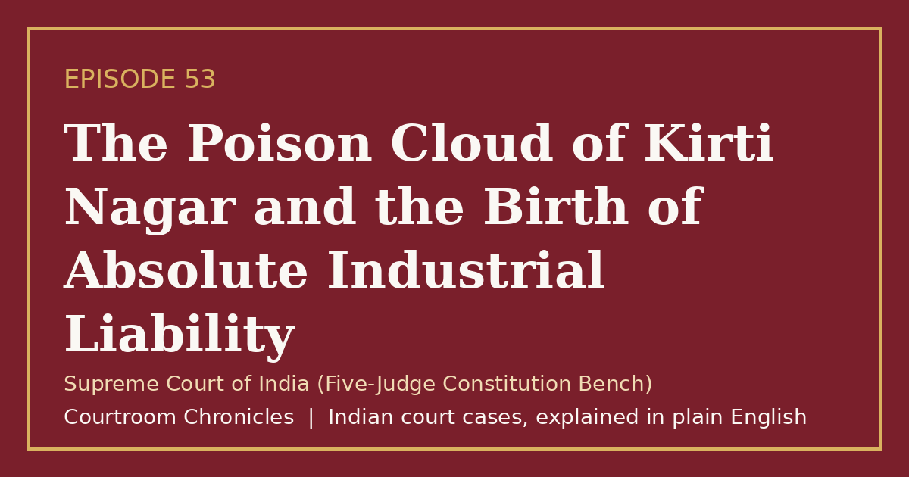

Episode 53
The Poison Cloud of Kirti Nagar and the Birth of Absolute Industrial Liability
Following a toxic gas leak in west Delhi, a Constitution Bench replaced nineteenth-century exceptions with absolute liability for hazardous industries.
Constitutional lawEnvironmental lawTort lawPublic interest litigation
#CourtroomChronicles#IndianLaw#EnvironmentalLaw#AbsoluteLiability#ConstitutionalLaw#Article21#SupremeCourtOfIndia

Listen
- Court
- Supreme Court of India (Five-Judge Constitution Bench)
- Date of Decision
- December 20, 1986
- Incident Date
- December 4 and December 6, 1985 (oleum gas leaks from a chemical plant in west Delhi)
- Human Toll
- One practicing advocate died and hundreds of residents and workers were hospitalized
- Doctrinal Shift
- Replaced traditional strict liability and its exceptions with non-delegable absolute liability
Key takeaways
- Hazardous industries in India operate under an absolute, non-delegable duty of safety with zero common-law exceptions.
- Industrial compensation is tied to enterprise scale and capacity to deter negligence in dense urban areas.
- The ruling reshaped Indian environmental jurisprudence and paved the way for modern pollution and public liability statutes.
The case in brief
While a public interest petition seeking the relocation of a hazardous chemical and fertilizer unit in west Delhi was pending before the Supreme Court, a storage tank structure collapsed on December 4, 1985, releasing a dense cloud of oleum gas across surrounding neighbourhoods. Hundreds of people were hospitalized and an advocate died after inhaling the toxic fumes, followed two days later by a second leak from a defective valve that triggered closure orders under Section 133 of the Code of Criminal Procedure.
Legal aid bodies and the local bar association intervened to claim compensation for the victims under Article 32, prompting a five-judge Constitution Bench to examine whether private industrial enterprises could be held directly accountable in writ proceedings. The bench noted that nineteenth-century common law rules on strict liability allowed industrial defendants to escape responsibility through exceptions such as acts of third parties or unforeseen natural events.
On December 20, 1986, the Constitution Bench established the doctrine of absolute liability, holding that any enterprise engaged in a hazardous or inherently dangerous activity owes an absolute, non-delegable duty to the community with zero exceptions if harm occurs. The court further ruled that compensation must be correlated to the magnitude and financial capacity of the enterprise to ensure effective deterrence.
Timeline
- First Oleum Gas Leak
A storage tank structure collapses at a west Delhi chemical unit, releasing toxic oleum gas and hospitalizing hundreds.
- Second Leak and Closure Order
A second leak from a defective valve prompts authorities to order the plant closed under Section 133 of the Code of Criminal Procedure.
- Conditional Plant Reopening
A three-judge bench permits conditional resumption under strict safety monitoring and refers compensation issues to a larger bench.
- Absolute Liability Doctrine Announced
A five-judge Constitution Bench establishes absolute industrial liability without exceptions and links damages to enterprise capacity.
What the court decided
Reference answered by the five-judge Constitution Bench; the court affirmed broad remedial powers under Article 32 and established absolute liability without exceptions for enterprises carrying on hazardous or inherently dangerous activities.
Key holdings
- An enterprise engaged in a hazardous or inherently dangerous industry owes an absolute and non-delegable duty to ensure no harm results to anyone.
- The nineteenth-century English rule of strict liability and its traditional exceptions do not apply to hazardous industrial enterprises in India.
- Compensation awarded against a hazardous enterprise must be proportionate to its magnitude and capacity so that damages carry a genuine deterrent effect.
- Article 32 empowers the Supreme Court to forge new remedies and award compensation in appropriate cases involving grave violations of fundamental rights.
Legal principles
Doctrine of Absolute Liability
Any enterprise carrying on a hazardous or inherently dangerous activity for profit is strictly and unconditionally liable for all resulting harm, without any common-law exceptions.
In this case: The court rejected defenses such as third-party sabotage or unforeseen mechanical failure, making industrial safety an absolute legal obligation.
Deep Pocket Principle of Deterrence
The measure of compensation for industrial harm should scale with the size and financial capacity of the enterprise.
In this case: The bench held that larger corporations must pay higher damages so that compensation acts as a meaningful deterrent against safety shortcuts.
Remedial Scope of Article 32
Constitutional writ jurisdiction includes the power to craft innovative remedies, not merely issue traditional prerogative writs.
In this case: The court affirmed that Article 32 allows awarding compensation where fundamental rights to life are threatened by mass industrial hazards.
The law then and now
Because the gas leaks occurred in December 1985, the proceedings were governed by the Code of Criminal Procedure, 1973, the Indian Penal Code, 1860, and the Indian Evidence Act, 1872, alongside Articles 21 and 32 of the Constitution.
Left: the law applied to this case. Right: the matching provision today (the new criminal codes apply only to offences on or after 1 July 2024).
- —
Unchanged. See all 9 episodes on this provision →
- —
Unchanged. See all 2 episodes on this provision →
Re-enacted in the Bharatiya Nagarik Suraksha Sanhita, 2023 as Section 152, retaining magistrates' power to abate public nuisances and hazardous operations. See all 2 episodes on this provision →
Replaced by Section 106 of the Bharatiya Nyaya Sanhita, 2023 with enhanced imprisonment of up to five years for negligent acts not amounting to culpable homicide. See all 5 episodes on this provision →
Consolidated into Section 125 of the Bharatiya Nyaya Sanhita, 2023 (covering former Sections 336, 337, and 338) with revised fine and imprisonment limits. See all 2 episodes on this provision →
Re-enacted as Section 39 of the Bharatiya Sakshya Adhiniyam, 2023, consolidating expert opinion rules including electronic evidence examiners. See all 5 episodes on this provision →
Sources
- Judgment of the Supreme Court of India (Five-Judge Constitution Bench), December 20, 1986
- Constitution of India (Official Legislative Department Text)
- Bharatiya Nagarik Suraksha Sanhita, 2023 and Code of Criminal Procedure, 1973 Comparative Table (UP Police)
- Bharatiya Nyaya Sanhita, 2023 and Indian Penal Code, 1860 Comparative Table (UP Police)
- Bharatiya Sakshya Adhiniyam, 2023 and Indian Evidence Act, 1872 Comparative Table (UP Police)